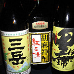
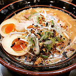
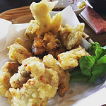

일본열도를 구성하는 4대 섬중 가장 남쪽에 있는 일본에서 3번째로 큰 섬이며, 그 섬을 중심으로 하는 지방이다.
기후
규슈는 온도 차가 적고 온난한 해양성 기후로 연평균 기온은 16°C~18°C이다. 연평균 강우량은 2,200㎜ 내외이며, 규슈 최남단에 위치한 야쿠시마(屋久島)에는 연평균 4,000㎜ 전후의 비가 내린다. 야쿠시마는 일본 최고 강우 지역 중 하나이다. 연평균 26회 발생하는 태풍 중 규슈에 상륙하는 태풍의 횟수는 2~3회이다.
관광지
◆ 다케오 시 도서관(武雄市図書館)
다케오 시 도서관에서는 도서 무료 대출은 물론, 츠타야 서점이 병설 되어 책 구입, CD·DVD의 유료 대여가 가능하다. 또, 관내에는 카페도 함께 운영되고 있어 커피를 마시며 책을 읽을 수도 있다.
- 이용시간: 9:00 ~ 21:00
- 사이트
- 오는 길
- JR 사세보선(JR佐世保線) 탑승, 다케오 온천 역(武雄温泉駅)에서 하차 및 도보 약 15분
- 유토쿠(祐徳) 버스 탑승 후 도서관 앞(図書館前) 하차
- JR 규슈(JR九州) 버스 탑승 후 유메타운(ゆめタウン) 하차
◆ 캐널시티 하카타(キャナルシティ博多)

운하(캐널)를 둘러싸듯 호텔, 공연극장, 영화관, 숍, 레스토랑, 전문매장, 쇼룸 등이 한 곳에 모인 복합상업시설.
매일 열리는 분수 쇼와 이벤트뿐 아니라 쇼핑과 레저 그리고, 맛있는 먹거리 등 이곳에는 언제나 즐거운 시간들이 기다리고 있다.
- 영업시간: 10:00 ~ 21:00
* 점포에 따라 상이. - 사이트
- 오는 길
- 니시테츠 버스/시티 루프 버스 탑승 후 캐널시티 하카타마에(キャナルシティ博多前)에서 하차
- (지하철) 나카스카와바타역(中洲川端駅) 하차 및 도보 약 7분
음식
◆ 쇼추(焼酎)
일본의 소주는 증류방법에 따라 2가지 타입으로 분류된다. 그 중 하나가 혼카쿠쇼추로, 전통적인 제조방법으로 증류하며 밀, 고구마, 메밀, 흑설탕 같은 재료의 소박한 맛을 가지고 있다.
◆ 돈코츠 라멘(豚骨ラーメン)
돼지뼈를 고아 만든 국물로 만든 라멘으로, 후쿠오카 현의 JR 구루메 역 앞의 포장마자에서 발상해낸 음식이다.
◆ 도리텐(とり天)
오이타 현의 향토 요리.
치킨과 비슷하며, 한입 크기로 자른 닭고기에 튀김옷을 입혀 튀긴 요리인데, 간장에 감귤류의 과즙을 섞은 조미료인 "폰즈" 소스에 찍어 먹는다.